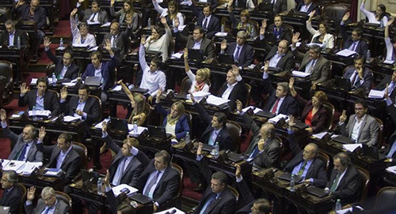

Real Chubut - Agencia de Noticias


Diputados aprobó el presupuesto de Macri (hubo votos del FpV)

La Cámara de Diputados aprobó y giró en revisión al Senado el proyecto de ley de Presupuesto 2017, que prevé una pauta de crecimiento de la economía del 3,5% para el año próximo, un ambicioso plan de obras públicas, y destinar más del 60% de los recursos a gastos sociales.
La iniciativa fue votada positivamente en general por 177 legisladores -más de los dos tercios de los miembros del cuerpo- contra 58 votos negativos y 4 abstenciones que correspondieron a Libres del Sur y uno de los secretarios generales de la CGT, Héctor Daer.
El dictamen de mayoría se votó con un amplio consenso ya que no sólo fue aprobado con el respaldo de Cambiemos, el massismo, el bloque justicialista y una docena de los setenta del FPV lo que marcó una clara ruptura en el seno del kirchnerismo, y bancadas provinciales.
Uno de los diputados del FPV que acompañó la aprobación fue el presidente del PJ, José Luis Gioja, y otro fue el vice presidente del bloque, Luis Basterra.
La implementación del presupuesto tendrá limitaciones para poder ser reformulado porque se votó una reforma del artículo 37 para acotar los superpoderes para cambiar el destino de los recursos presupuestarios ya que se acotó esta atribución a un 7,5% del gasto.
La sanción del presupuesto y de la limitación de los superpoderes se concretó tras un maratónico debate que se extendió doce horas dado que se inició a las 16:30, tras la aprobación del proyecto de asociación público-privado para atraer inversiones para las obras de infraestructura.
Uno de los puntos que estuvo en discusión, pero al final no fue incluido en el proyecto, es la partida de $ 100 millones para las dietas del Parlasur, lo que generó las críticas del presidente del bloque del FPV Héctor Recalde.
Si bien en un principio el oficialismo se mostraba proclive a incluir esa partida, tras la decisión del gobierno de apelar el fallo de la Cámara Electoral, y el rechazo de los propios diputados de Cambiemos y el massismo, se desistió de establecer una partida para tal fin.
Además se incluyeron dos artículos, uno para autorizar al gobierno a alcanzar un acuerdo para cancelar el fallo de la Corte con Santa Fe y San Luis, y otro para reconocer las deudas que 28 empresas tienen con La Rioja, por el programa de promoción industrial.
El presupuesto contempla un crecimiento del PBI de 3,5%; una pauta inflacionaria del 17%; un dólar a 18 pesos; un déficit fiscal del 4,2% y una deuda estimada en $ 247.000 millones, con un gasto global de 2.363.619.870.574 pesos.
También incluye el criterio de priorizar el gasto social ya que se sigue destinando el 64% a servicios sociales y reforzar las partidas para obras públicas, que se harán con el sistema de contrato público privado, ya que se sumaron emprendimientos de infraestructura claves para las provincias.
En el cierre del debate, el presidente del interbloque Cambiemos, Mario Negri, dijo que "éste es el presupuesto que hemos podido construir entre todos, de acuerdo al país que heredamos" y lo "estamos orgullosos haber alcanzado este consenso entre todos".
"Es un presupuesto transparente que no esconde artículos, tiene un crecimiento moderado y no subestima recursos como pasaba en los últimos años del kirchnerismo", agregó.
Negri dijo "somos conscientes que tenemos que ser cuidadosos con el nivel de endeudamiento y con el déficit fiscal, por eso prevemos este año bajar del 4,7% al 4,2%" y ahora "los gobernadores llegaron sedientos de recursos y de palabras, porque si hablaban los retaban".
El presidente del bloque del Frente para la Victoria, Héctor Recalde, anunció que "mayoritariamente este bloque va a votar en contra, pero algunos compañeros lo van hacer a favor" y destacó que este "éste es un presupuesto de ajuste y endeudamiento".
El presidente del bloque justicialista, Oscar Romero, aseguró que "rescato de este presupuesto el planteo de salir del centralismo para tratar de empezar a transitar el federalismo" y señaló que "en este presupuesto se trabajó para lograr, a la mayoría de las provincias, la mejor de las soluciones".
En la discusión en particular hubo un fuerte debate sobre la distribución de las partidas adicionales de $ 1.000 millones para las Universidades que fue cuestionado por los diputados de San Luis, José Ricardo, por el santafesino Mario Barletta y el kirchnerista Axel Kicillof.
En este caso, también se realizó la votación nominal que salió 138 contra 67 votos y 22 abstenciones, mientras se decidió con el mismo sistema en el artículo referido al endeudamiento y aquí también hubo votación nominal que fue de 136 contra 71 votos.
Uno de los cambios sustanciales que se incluye es la incorporación de una suma adicional de $ 5.000 millones en el Fondo sojero que se distribuirá de acuerdo a los índices de coparticipación, el 70% a las provincias y el 30%, pero tendrán el requisito de que se utilicen para obras de infraestructura.
Otro agregado puntual, y que forma parte del acuerdo con los gobernadores, fue destinar $ 8.000 millones para distribuir en forma automática a las provincias que conservan las cajas previsionales para cubrir el déficit de las mismas.
Además se incluyeron cuatro artículos que plasman el acuerdo firmado entre la Nación y las provincias donde se extiende la ley de Responsabilidad Fiscal, pero se incluyen reformas como la obligación de reducir en un 10% el déficit fiscal, se prorrogan deudas de capital por 2 años, y se autoriza a aquellas que tienen superávit a endeudarse sin autorización de la Nación.
También se incrementaron en $ 1.290 millones los recursos para el área ciencia y técnica; en $ 4.500 millones para el Ministerio del Interior, para realizar obras hídricas, otros $ 4.500 millones para el Ministerio de Agroindustria, y $ 300 millones para la aplicación de la ley de bosques.